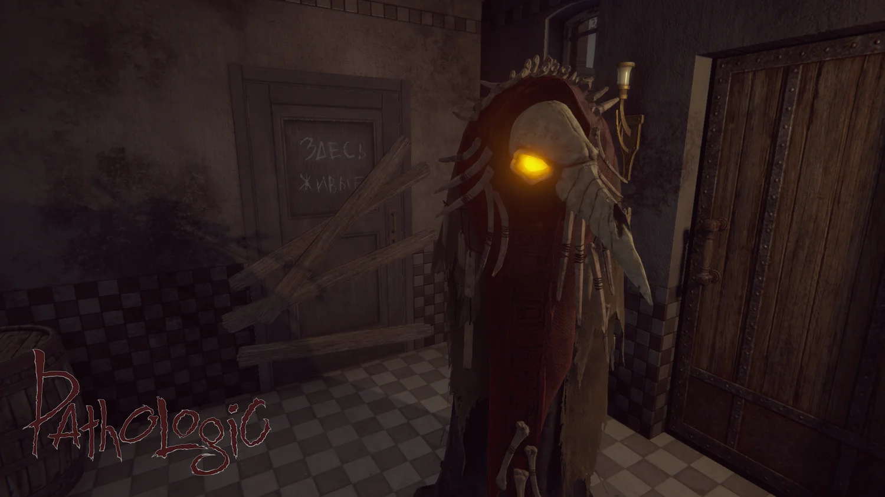

- Замедленный психологический хоррор
- Невозможные и необратимые решения
- Живой, враждебный город
- Игра, которая отказывается вести игрока за руку
Об игре
Мор 2 — это психологический кошмар о выживании в мёртвом, изолированном городе.
Вы управляете Артемием Бурахом, хирургом по профессии, которого зовёт обратно родной город его отец, местный врач, исчезает при странных обстоятельствах.
Когда Артемий возвращается, он находит отца убитым, а город уже охвачен таинственной и смертельной эпидемией, которая пожирает жителей с ужасающей скоростью.
Каждый день город меняется: улицы пустеют или наполняются безумными жителями, ресурсы воды и еды исчезают, а старые семьи, преступники и охотники на ведьм решают, кто выживет.
Посреди этого хаоса возвышается Полиэдр — странная структура, неподвластная законам физики и доступная только детям, и Театр, который знает будущее, ломает четвёртую стену, наблюдая за каждым вашим шагом. Город дышит. Он смотрит. Он испытывает ваши решения.
Здесь никто не спасён, и страх всегда рядом.
| Разработчик | Ice-Pick Lodge, российская студия |
|---|---|
| Год выпуска | 2019 |
| Жанр | Психологический хоррор / Выживание |
| Сложность | Очень высокая |
| Где играть | Steam, PS4, Xbox One |
Почему Мор 2 отличается от других игр
Чем вам приходится управлять в игре
- Время (каждый день на счету)
- Голод и жажда
- Болезнь
- Моральные решения
- Психическая усталость

Темы игры
- Смерть и неизбежность
- Вина
- Страх неудачи
- Наука против веры
- Город как живой организм
Как игра влияет на ваши эмоции
Мор 2 не вознаграждает вас. Она наблюдает за вашей реакцией, когда вам всего не хватает.
Вы будете делать плохие выборы. Не потому, что вы плохи, а потому, что игра заставляет вас это делать.
Отзывы игроков
| Игрок | Отзыв | Оценка |
|---|---|---|
| ZombieEnPause | « Каждое решение вызывало у меня холодный пот, настоящий психологический кошмар. » | ⭐️⭐️⭐️⭐️ |
| DocteurPeur | « Город сам по себе как живой персонаж, он наблюдает и испытывает вас. » | ⭐️⭐️⭐️⭐️⭐️ |
| VieuxPolyèdre | « Мор 2 не щадит никого, ни игрока, ни жителей. » | ⭐️⭐️⭐️⭐️⭐️ |
| Anonyme | « Я сдалась. Слишком сложно. И именно поэтому игра произвела на меня такое впечатление. » | ⭐️⭐️ |
| CauchemarExpress | « Ужасно, поэтично и захватывающе одновременно. Я никогда не испытывал ничего подобного в игре. » | ⭐️⭐️⭐️⭐️⭐️ |
Трейлер
Эту игру нельзя выиграть.
Её нужно пережить.